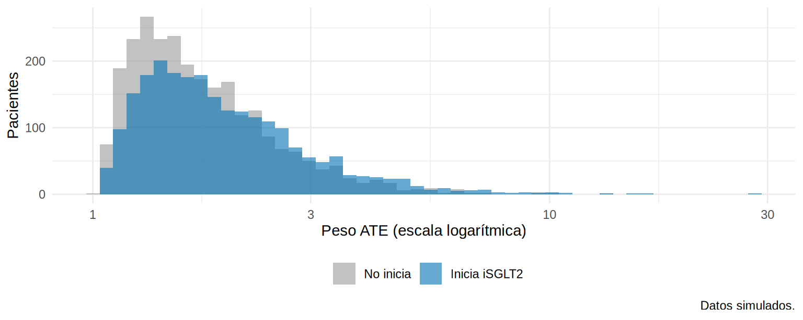
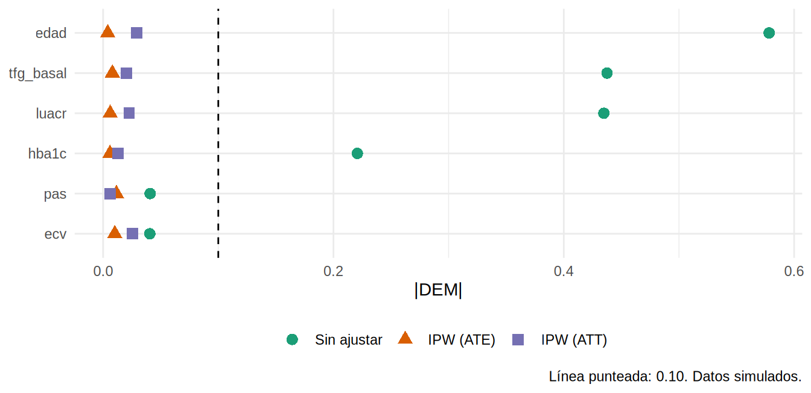

library(tidyverse)
library(sandwich)
library(lmtest)
source("R/funciones_epi.R")
source("R/funciones_extra_cap1213.R")
oraculo <- cargar_oraculo()
ckd <- observado(oraculo)
verdad <- verdad_pendiente(oraculo)
vars <- c("edad", "hba1c", "pas", "tfg_basal", "luacr", "ecv")Ponderación (IPW): dar más voz a los pacientes “raros”
Nota🩺 Escenario
En tu base, casi nadie con poca albuminuria, joven y con TFGe baja recibe iSGLT2; si alguien así lo recibe, es un caso poco frecuente. En vez de descartar pacientes (como hace el emparejamiento), ¿qué tal si a ese paciente poco frecuente le das más peso, de modo que “represente” a todos los que se le parecen y no recibieron el fármaco?
Es la misma lógica de una encuesta con muestreo ponderado (Cap. 6.3): un participante de un grupo subrepresentado cuenta por varios. Con la ponderación por probabilidad inversa (inverse probability weighting, IPW) cada paciente pesa lo que “pesa su rareza”: un tratado con PS bajo (poco probable que recibiera el fármaco) pesa mucho; un tratado con PS alto (lo esperable) pesa poco. El resultado es una pseudopoblación en la que el tratamiento ya no depende de los confusores medidos, como en un ensayo.
Lo que vamos a hacer
- Construir los pesos ATE, ATT y ATU y entender de dónde salen.
- Revisar los pesos y el balance ponderado (antes de estimar).
- Estimar el efecto con errores estándar correctos y compararlo con la verdad.
Paso 1: del PS a los pesos
El peso de cada paciente es el inverso de la probabilidad de recibir el tratamiento que realmente recibió:
\[ w_i^{ATE} = \frac{1}{P(A = a_i \mid X_i)} = \begin{cases} 1/e(X_i) & \text{tratados} \\ 1/(1 - e(X_i)) & \text{no tratados} \end{cases} \]
Según el estimando que busques, la receta cambia:
| Estimando | Peso de los tratados | Peso de los no tratados |
|---|---|---|
| ATE (toda la población) | \(1/e(X)\) | \(1/(1-e(X))\) |
| ATT (los tratados) | 1 | \(e(X)/(1-e(X))\) |
| ATU (los no tratados) | \((1-e(X))/e(X)\) | 1 |
En código, son tres líneas después de estimar el PS (el mismo modelo de 12.3):
formula_ps <- as.formula(paste("isglt2 ~", confusores_medidos))
ckd$ps <- fitted(glm(formula_ps, data = ckd, family = binomial))
ckd <- ckd |>
mutate(
w_ate = ifelse(isglt2 == 1, 1 / ps, 1 / (1 - ps)),
w_att = ifelse(isglt2 == 1, 1, ps / (1 - ps)),
w_atu = ifelse(isglt2 == 1, (1 - ps) / ps, 1)
)
## Cuatro pacientes: ¿quién pesa más?
ejemplo <- ckd |> filter(id %in% c(1, 10, 4, 6)) |>
select(id, tratamiento = trat, edad, uacr, ps, w_ate) |>
mutate(across(c(ps, w_ate), \(x) round(x, 2)))
ejemplo# A tibble: 4 × 6
id tratamiento edad uacr ps w_ate
<dbl> <fct> <dbl> <dbl> <dbl> <dbl>
1 1 Inicia iSGLT2 70 77 0.33 3.02
2 4 No inicia 77 162 0.2 1.26
3 6 No inicia 62 182 0.61 2.58
4 10 Inicia iSGLT2 71 181 0.3 3.33Qué vemos: el paciente 1 recibió el fármaco con un PS de 0.33, más bien improbable: pesa 3.02 (cuenta por tres). El paciente 4 no lo recibió y su PS era bajo (0.2), lo esperable: pesa solo 1.26. En cambio, el paciente 6 no lo recibió pese a tener un PS de 0.61: pesa 2.58. Regla simple: pesa más quien recibió un tratamiento poco probable para su perfil.
Con el paquete WeightIt (que usa el autor) es una sola llamada:
## Con el paquete WeightIt (no se ejecuta aquí)
library(WeightIt)
W <- weightit(formula_ps, data = ckd, estimand = "ATE", method = "glm") # "ps" en versiones antiguas
summary(W)
ckd$w_ate <- W$weightsPaso 2: revisa los pesos (antes de seguir)
Los pesos muy grandes dan inestabilidad: unos pocos pacientes dominan el resultado. Un resumen útil es el tamaño de muestra efectivo (ESS): cuántos pacientes “equivalen” tus datos ponderados.
ckd |> group_by(trat) |>
summarise(n = n(), peso_medio = mean(w_ate), peso_max = max(w_ate), ESS = ess(w_ate)) |>
mutate(across(where(is.numeric), \(x) round(x, 1)))# A tibble: 2 × 5
trat n peso_medio peso_max ESS
<fct> <dbl> <dbl> <dbl> <dbl>
1 No inicia 2650 1.9 13.2 2154.
2 Inicia iSGLT2 2350 2.1 29 1695.Qué vemos: los pesos van de 1 a 29. El ESS es de 2 154 (no tratados) y 1 695 (tratados), frente a 2 650 y 2 350 reales: la ponderación “cuesta” entre 19 y 28 % de información.
ggplot(ckd, aes(w_ate, fill = trat)) +
geom_histogram(bins = 50, position = "identity", alpha = 0.6) +
scale_x_log10() +
scale_fill_manual(values = c("No inicia" = "#999999", "Inicia iSGLT2" = "#0072B2"), name = NULL) +
labs(x = "Peso ATE (escala logarítmica)", y = "Pacientes", caption = "Datos simulados.") +
theme_minimal(base_size = 11) + theme(legend.position = "bottom")
Advertencia⚠️ La trampa de los pesos extremos
- Pesos mayores de 10-20 suelen indicar violación de positividad: pacientes sin comparables.
- Mira quién tiene los pesos más grandes (¿son clínicamente “raros”?). Aquí lo haces en el ejercicio 2.
- Revisa el modelo del PS (¿falta no linealidad?) y valora restringir la población (12.3).
- Reporta el ESS y analiza con y sin estabilización o truncamiento.
Paso 3: comprueba el balance ponderado
Igual que con el emparejamiento: si los pesos funcionaron, la DEM debe caer por debajo de 0.10.
love_plot(ckd, vars, pesos = list(`IPW (ATE)` = ckd$w_ate, `IPW (ATT)` = ckd$w_att))
dem_ipw <- tabla_dem(ckd, vars, pesos = list(`IPW (ATE)` = ckd$w_ate, `IPW (ATT)` = ckd$w_att))
dem_ipw |> mutate(across(where(is.numeric), \(x) round(x, 3)))# A tibble: 6 × 4
variable sin_ajustar `IPW (ATE)` `IPW (ATT)`
<chr> <dbl> <dbl> <dbl>
1 edad -0.578 -0.004 -0.029
2 hba1c 0.221 0.006 0.013
3 pas -0.041 -0.012 -0.006
4 tfg_basal 0.438 0.008 0.02
5 luacr 0.435 0.006 0.023
6 ecv -0.041 0.01 -0.026Qué vemos: con los pesos ATE la DEM mayor es 0.012; con los ATT, 0.029. Con ATE se equilibra a toda la población; con ATT, hacia la población de los tratados. Lo medido está perfectamente equilibrado, mejor que con el emparejamiento (que descartó pacientes).
## Con el paquete cobalt + WeightIt (no se ejecuta aquí)
library(cobalt)
bal.tab(W, un = TRUE, thresholds = c(m = 0.1))
love.plot(W, binary = "std", thresholds = c(m = 0.1), abs = TRUE, var.order = "unadjusted", line = TRUE)Paso 4: estima el efecto
Con pesos, el análisis es una regresión ponderada simple: desenlace ~ tratamiento. Pero ojo, los errores estándar habituales son incorrectos porque ignoran que los pesos se estimaron. Usa varianza robusta (vcovHC) o un bootstrap que repita todo el proceso:
estimar_w <- function(w, estimando) {
fit <- lm(pendiente_tfg ~ isglt2, data = ckd, weights = w)
ct <- coeftest(fit, vcov = vcovHC(fit, type = "HC1"))["isglt2", ]
tibble(estimando, estimado = ct[1], ee_robusto = ct[2])
}
res_ipw <- bind_rows(estimar_w(ckd$w_ate, "ATE"), estimar_w(ckd$w_att, "ATT"), estimar_w(ckd$w_atu, "ATU")) |>
mutate(verdad = verdad[estimando], sesgo = estimado - verdad)
res_ipw |> mutate(across(where(is.numeric), \(x) round(x, 2)))# A tibble: 3 × 5
estimando estimado ee_robusto verdad sesgo
<chr> <dbl> <dbl> <dbl> <dbl>
1 ATE 1.34 0.05 0.93 0.41
2 ATT 1.44 0.05 1.06 0.38
3 ATU 1.26 0.05 0.81 0.44Qué vemos: cada versión estima un efecto distinto (ATE, ATT, ATU) y los tres quedan por encima de la verdad (sesgo de 0.38 a 0.44). La razón es la misma de siempre: la fragilidad no medida.
Bootstrap que repite todo el proceso
Los errores robustos no incorporan la incertidumbre del modelo del PS. El bootstrap (Cap. 7.4) sí, si en cada remuestreo vuelves a estimar el PS y los pesos:
library(boot)
ipw_fn <- function(datos, i) {
d <- datos[i, ]
ps <- fitted(glm(formula_ps, data = d, family = binomial))
w <- ifelse(d$isglt2 == 1, 1 / ps, 1 / (1 - ps))
unname(coef(lm(pendiente_tfg ~ isglt2, data = d, weights = w))["isglt2"])
}
set.seed(12)
b <- boot(ckd, ipw_fn, R = 500)
c(estimado = b$t0, ee_bootstrap = sd(b$t), quantile(b$t, c(0.025, 0.975))) |> round(2) estimado ee_bootstrap 2.5% 97.5%
1.34 0.04 1.26 1.43 Pesos estabilizados y truncados
Si hay pesos extremos, hay dos remedios:
- Estabilizar: multiplicar por la probabilidad marginal del tratamiento recibido, \(sw_i = P(A=a_i) / P(A=a_i\mid X_i)\). Reduce la variabilidad y deja los pesos medios cerca de 1.
- Truncar: reemplazar los pesos por encima de un percentil (p. ej., 99) por ese valor. Introduce sesgo a cambio de menor varianza.
p_trat <- mean(ckd$isglt2)
ckd <- ckd |>
mutate(w_est = ifelse(isglt2 == 1, p_trat / ps, (1 - p_trat) / (1 - ps)),
w_trunc = pmin(pmax(w_ate, quantile(w_ate, 0.01)), quantile(w_ate, 0.99)))
tibble(tipo = c("ATE sin modificar", "Estabilizado", "Truncado 1-99 %"),
media = c(mean(ckd$w_ate), mean(ckd$w_est), mean(ckd$w_trunc)),
maximo = c(max(ckd$w_ate), max(ckd$w_est), max(ckd$w_trunc)),
estimado = c(coef(lm(pendiente_tfg ~ isglt2, ckd, weights = w_ate))[2],
coef(lm(pendiente_tfg ~ isglt2, ckd, weights = w_est))[2],
coef(lm(pendiente_tfg ~ isglt2, ckd, weights = w_trunc))[2])) |>
mutate(across(where(is.numeric), \(x) round(x, 2)))# A tibble: 3 × 4
tipo media maximo estimado
<chr> <dbl> <dbl> <dbl>
1 ATE sin modificar 2 29.0 1.34
2 Estabilizado 1 13.6 1.34
3 Truncado 1-99 % 1.97 6.2 1.35Qué vemos: con un tratamiento en un solo momento (como aquí), estabilizar no cambia el efecto (solo reescala los pesos dentro de cada grupo). Estabilizar importa sobre todo cuando el tratamiento varía en el tiempo (Cap. 19). Truncar sí mueve la estimación un poco, a cambio de pesos menos extremos.
IPW para desenlaces binarios
Con una pseudopoblación balanceada, el riesgo ponderado de cada grupo se calcula directamente:
riesgo <- ckd |> group_by(isglt2) |> summarise(r = weighted.mean(evento, w_ate))
r_ipw <- c(riesgo_no_inicia = riesgo$r[1], riesgo_inicia = riesgo$r[2],
diferencia = riesgo$r[2] - riesgo$r[1], razon = riesgo$r[2] / riesgo$r[1])
round(r_ipw, 3)riesgo_no_inicia riesgo_inicia diferencia razon
0.190 0.109 -0.081 0.572 r1 <- mean(oraculo$evento_36m_1); r0 <- mean(oraculo$evento_36m_0)
c(DR_verdadera = r1 - r0, RR_verdadero = r1 / r0) |> round(3)DR_verdadera RR_verdadero
-0.045 0.736 Qué vemos: el IPW da una diferencia de -8.1 puntos y un RR de 0.57; la verdad es -4.5 puntos y 0.74. Mismo patrón que con los demás métodos: sobreestima el beneficio por la fragilidad.
Un paso más: cuando el tratamiento es continuo (una dosis)
Si la exposición fuera una dosis o una concentración (no un sí/no), no hay un PS, pero la idea es la misma: el peso es el cociente entre la densidad del tratamiento solo y la densidad del tratamiento dado los confusores (el autor lo desarrolla con el ejemplo de subvenciones y malaria de Heiss). Con datos hipotéticos de dosis:
## Tratamiento continuo (dosis), no se ejecuta: ilustración con datos hipotéticos
num <- dnorm(datos$dosis, predict(lm(dosis ~ 1, datos)), sd(resid(lm(dosis ~ 1, datos)))) # numerador
m_den <- lm(dosis ~ edad + tfg_basal + luacr, data = datos)
den <- dnorm(datos$dosis, predict(m_den), sd(resid(m_den))) # denominador
datos$w <- num / den # pesos estabilizados
lm(pendiente ~ dosis, data = datos, weights = w)
## Con WeightIt: weightit(dosis ~ edad + tfg_basal + luacr, data = datos, stabilize = TRUE)
Importante🎯 En resumen
- IPW: ponderar a cada paciente por \(1/P(\text{su tratamiento}\mid X)\) crea una pseudopoblación sin confusión medida; los pesos ATE, ATT y ATU apuntan a estimandos distintos.
- Revisa los pesos (rango, ESS) y el balance ponderado antes de estimar.
- Usa errores estándar robustos o un bootstrap que repita todo el proceso.
- Los pesos estabilizados y truncados reducen la varianza (truncar introduce sesgo).
- IPW no corrige la confusión no medida: aquí, todos los estimados quedan por encima de la verdad.
Ejercicio
- Calcula el ESS con los pesos ATT y compáralo con el de los pesos ATE. ¿Por qué cambia?
- Identifica los 20 pacientes con mayor peso ATE y describe su perfil (edad, UACR, TFGe). ¿Tiene sentido clínico que pesen tanto?
- Estima el efecto con un modelo de PS que incluya
fragilidad(solo posible en simulación). ¿Se acerca a la verdad (0.93)?